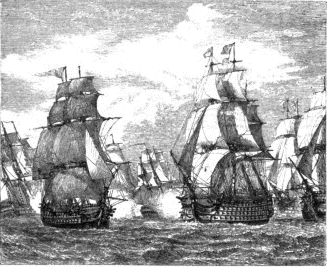
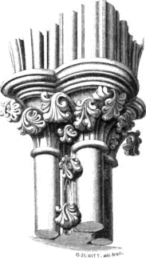
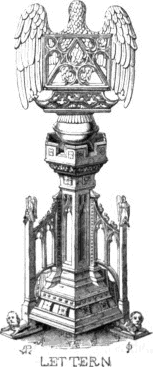

CHAPTER VIII.
ARTISTS AND ENGRAVERS ON WOOD OF THE PRESENT
DAY.
The present chapter, which is additional to the former edition, had not been contemplated until the previous pages were printed off. But it was then suggested to the publisher, by one who was able and willing to co-operate in the object, that although the book was intended to be merely an improved reprint of what had been given before, a short chapter might advantageously be added respecting those Artists of the present day who were omitted by Jackson, or have risen to eminence since his time.
Applications in the form of a circular were accordingly issued, and have resulted in the Specimens now presented. They must speak for themselves, it not being within the province of the publisher to pronounce as to their respective merits. Besides which, the art of wood-engraving, owing to the enormous impulse given to it during the last twenty years, has attained such a pitch of excellence, that it would be somewhat difficult to determine who, if sufficiently stimulated, could produce the most perfect work. Artists in Wood, like Artists in Oil, have their specialties, and excel relatively in Landscape, Cattle, or Figure drawing; Architecture, Natural History, Diagrams, or Humour. But though each may acquire distinction in the department which choice or accident has assigned him, some can undertake all departments equally well. In saying this we refer to engraving rather than designing, for Harrison Weir would hardly undertake Architecture; Orlando Jewitt, Animals; or George Cruikshank, Mathematical Diagrams.
When, with the age of Bewick, wood-engraving began to reassume its importance for book illustration, both designing and engraving were generally performed by the same hand; but, in the present day, the professions are becoming too important to be joined, and those who, like William Harvey, Samuel Williams, and others, commenced by practising both, now, recognising the modern policy of a division of labour, confine themselves with few exceptions to one. Our business here, so far as designs are concerned, is almost limited to those draughtsmen who habitually draw on wood, for it is unnecessary to say that every drawing or painting may be transferred to wood by the practical operator.
The following Specimens are given in accidental order rather than with any notion of precedence or classification.
550The present and following specimens are engraved by James Cooper. The first one is from Mr. Murray’s illustrated edition of Childe Harold, published in 1859, which contains eighty engravings, all designed by Mr. Percival Skelton; the others from the Select Poems and Songs of Robert Burns, published by Kent & Co. in 1858. Mr. Cooper is favourably known to the artistic world by his engravings in Rhymes and Roundelayes, a volume to which we shall presently refer again; Poetry and Pictures from Thomas Moore, Longmans, 1858; The Merrie Days of England, 1859; Favourite English Poems, 1858; and Bloomfield’s Farmer’s Boy, 1858—mostly after designs by Birket Foster, and all produced under the superintendence of Mr. Joseph Cundall.
551
BANKS OF THE NITH.
BURNS’ POEMS
This and the preceding three specimens complete what we have to adduce of Mr. Cooper’s engraving: the designers will be spoken of in subsequent pages.
553Mr. Harrison Weir is distinguished for his spirited drawings of animals and rural landscapes, as will be seen in the annexed examples, which are engraved by W. Wright (formerly with Vizetelly) and John Greenaway. He has contributed to most of the popular works of recent date, in which animals form a feature. Among them may be named: The Poetry of the Year; Poems and Songs by Robert Burns; Poetry and Pictures from Thomas Moore; Favourite English Poems; Barry Cornwall’s Dramatic Scenes and Poems; Fable Book for Children; James Montgomery’s Poems, 1860, and Wood’s Natural History.
554 555Both this and the specimen on the preceding page are from the illustrated edition of Campbell’s Pleasures of Hope, of which all the plates are engraved by Mr. John Greenaway.
Mr. Greenaway has contributed to many other of the illustrated publications of the present day, and among them to the Poetry of Nature, edited by Mr. J. Cundall, with thirty-six cuts all designed by Harrison Weir. Low and Son, 1860. Bloomfield’s Farmer’s Boy, 1858; Favourite English Ballads, 1859.
556Engraved by Edmund Evans from a design by Birket Foster for Rhymes and Roundelayes, published by Mr. Bogue in 1857, and since by Messrs. Routledge. Mr. Evans has likewise engraved the Landscapes in Cowper’s Task, after designs by the same artist, Herbert’s Poetical Works, and Graham’s Sabbath, all published by Nisbet & Co.; the Landscapes in Scott’s Lay of the Last Minstrel, and Marmion, published by Adam Black & Co.; many of the subjects in Poems and Songs by Robert Burns, from which we have given several specimens, The Merrie Days of England, &c.; and all the illustrations in Goldsmith’s Poetical Works, which are printed in Colours by himself.
557Engraved by W. J. Palmer, after a design by Birket Foster, for Lays of the Holy Land, published by Nisbet & Co. Mr. Palmer has also contributed to the Illustrated edition of Thomson’s Seasons, The Merchant of Venice, Gray’s Poems, published by Low and Son; The Merrie Days of England, Kent & Co., and other pictorial works, chiefly after the designs of Birket Foster, and under the superintendence of Mr. Cundall.
558Although several specimens have already been given of Birket Foster’s powers of design, in speaking of the engravers, we give another, one of his earliest, that we may have occasion to say something of himself.
Mr. Birket Foster was a pupil of Mr. Landells, who, discerning his artistic talent, employed him from an early age in the superior department of his profession. After he commenced on his own account, his first important illustrations were for Longfellow’s Poetical Works, of which the above is a specimen. He has since partly or wholly illustrated, besides those works already mentioned under the name of the engraver, Adams’s Allegories, published by Messrs. Rivington; The Book of Favourite Modern Ballads, Poets of the Nineteenth Century, Christmas with the Poets, Favourite English Poems, Home Affections, The Merrie Days of England, Barry Cornwall’s Dramatic Scenes and Poems, Southey’s Life of Nelson, Gosse’s Rivers of the Bible, and many other of the best works of the period. In 1859 he was elected a member of the Old Water Colour Society, and has since then devoted himself almost exclusively, and with great success, to painting in Water Colours.
559Mr. John Tenniel is a successful illustrator of Historical subjects, and Ballad poetry, and has produced many fine examples of his pencil. His most recent work is a series of sixty-nine designs for the illustrated edition of Moore’s Lalla Rookh, engraved by the Messrs. Dalziel, which the “Times” of Nov. 1, 1860, calls the “greatest illustrative achievement of any single hand,” and of which we here present an example. He is now engaged in illustrating Shirley Brooks’ story called The Silver Cord, in “Once a Week;” and in 1857 he contributed a number of spirited designs to the illustrated edition of Barry Cornwall’s Poetical Works. Among Mr. Tenniel’s earlier works are several in the Book of British Ballads, edited by Samuel Carter Hall, in 1843; and among his popular designs, sketched with a free pencil, are his large cuts in “Punch,” and his small ones in Punch’s Pocket Book.
560DEATH OF SFORZA.
Both these examples are from Barry Cornwall’s dramatic sketch, entitled Ludovico Sforza, published in the illustrated edition of his Poems.
561*Engraved by Messrs. Dalziel, Brothers, after the designs of Mr. John Gilbert. These highly appreciated Artists appear together in a considerable number of the illustrated publications of the present day. Messrs. Dalziel are among the most extensive of our wood-engravers, and have taken part in all the illustrated works of importance which have been produced during the last twenty years. Among the recent ones are:—Staunton’s Illustrated Shakspeare, from which the above specimen is taken, and Longfellow’s Poems, Routledge, 1859; Barry Cornwall’s Dramatic Scenes and Poems, with fifty-seven wood-engravings, published by Chapman and Hall in 1857, now republished by Henry G. Bohn; and Tennyson’s Princess, after drawings by Maclise. These artists are at present engaged in engraving Millais’ Designs in the “Cornhill Magazine.”
562*The present engraving, executed by the Brothers Dalziel, for Barry Cornwall’s Poems, gives a pleasing example of Mr. Thomas Dalziel’s drawing.
The next two are early designs by Mr. John Gilbert. The first is from the Percy Tales of the Kings of England, originally published in 1840, by Mr. Cundall, and since by Henry G. Bohn; the other from Maxwell’s Life of the Duke of Wellington, in which there are upwards of one hundred similar vignettes, originally published in 1840, by Messrs. Baily, Brothers.
563*JOHN GILBERT
KIRCHNER
PRINCE ARTHUR AND HUBERT DE BOURG.
FROM PERCY TALES OF THE KINGS OF
ENGLAND.
JOHN GILBERT.
THE DEMON LOVER.
We have here, engraved by Mr. W. A. Folkard, another of the early designs of Mr. John Gilbert. It is one of the illustrations to the Book of English Ballads, edited by S. C. Hall, in 1843, which contains upwards of four hundred wood-engravings, and was the first work of any consequence that presented a combination of the best artists of the time. Indeed, it was the leader in what may be called the Illustrated Christmas Books of the present day. Since this period, Mr. Gilbert has probably produced more drawings on wood than any other artist, and has contributed to almost every illustrated book of any importance. He is a member of the Old Water Colour Society, and has sent many fine drawings to the Exhibition.
Page image showing original layout.
William L. Thomas deserves to rank among the foremost of our wood-engravers, as will be seen by the present specimen. He engraved most of the subjects to Hiawatha, all of which were drawn by his brother George H. Thomas, and are now included in Bohn’s Illustrated edition of Longfellow’s Works; many of Mr. Maclise’s masterly designs for Tennyson’s Princess, and all the subjects for the Boys’ Book of Ballads, from drawings by John Gilbert. They have also contributed, separately or together, to the Book of Favourite Modern Ballads, Poetry and Pictures from Thomas Moore, Burns’ Poems, The Merrie Days of England, Favourite English Poems, and many other illustrated works.
566*HIAWATHA.
Engraved by Horace Harral (a pupil of the late John Orrin Smith), after a design by George Thomas, for the illustrated edition of Longfellow’s Poems, formerly published in detached portions by Kent & Co., and now completely by H. G. Bohn. These artists have also contributed to the illustrated editions of Coleridge’s Ancient Mariner, Burns’ Poems, Campbell’s Pleasures of Hope, the Merchant of Venice, and The Merrie Days of England; also to the Poetry and Pictures from Thomas Moore. Mr. George Thomas, who has long ranked as one of our best draughtsmen of figure subjects, has of late turned his attention almost exclusively to painting in oils, and is a successful exhibitor.
567*These pleasing specimens conclude our examples of the drawing of Mr. George Henry Thomas. Of Mr. Evans the engraver we have already spoken.
568*The illustrated volume from which this is taken has twenty-six illustrations, engraved by W. Thomas, W. T. Green, E. Williams, and Dalziel, Brothers. Miss E. Williams is a daughter of the late talented Samuel Williams.
569*Here is another Design by Mr. D. Maclise, R.A., who in his own peculiar manner has furnished drawings on wood for several finely illustrated publications, among which may be enumerated Longman’s edition of the Poems and Songs of Thomas Moore, and especially Tennyson’s Princess, of which we have given an example on a previous page. The present is the smallest of a series of designs engraved by Mr. John Thompson, for that stirring Ballad, Bürger’s Leonora.
Mr. Percival Skelton has been mentioned incidentally on a previous page, and we should have given in addition a fine example of his pencil from the Book of Favourite Modern Ballads, but the plate is too large. This present small specimen is to introduce the name of Mr. J. W. Whymper, who has been concerned in many of the illustrated publications of the last thirty years, and especially those published by the Christian Knowledge Society.
570*Mr. Henry Vizetelly has been so indefatigable for the last twenty years in producing illustrated works in every department, that examples of his wood engraving are extensively distributed. He is besides a printer, well skilled in bringing up wood-cuts, which is a most delicate and artistic process. All the engravings in Miller’s Boy’s Country Year Book, and the Book of Wonderful Inventions, are engraved by him, or under his direction, as are also most of the charming series of designs made by Clarkson Stanfield, R.A. for Marryat’s Poor Jack, of which the annexed is a specimen; many of the plates in Bohn’s illustrated 571* edition of Longfellow’s Poems; and the entire series of Christmas with the Poets, fifty-three subjects, printed in tints by himself.
We here present a specimen of a series of engravings executed by Mr. Vizetelly, for a work projected by the late Mr. Bogue, and yet unpublished.
572*Samuel Williams (recently deceased) deserves a conspicuous niche in the Walhalla of Artists for his forty-eight beautiful illustrations of Thomson’s Seasons, all drawn and engraved by himself. The annexed specimens selected from that volume (now about to be published by Mr. Bohn in his Illustrated Library) will give a fair example of his peculiar taste in the miniature treatment of rural subjects.
573*This and the following engraving were executed by Mr. George Pearson, a rising artist, after drawings made by John Wolf, for the illustrations of T. W. Atkinson’s Travels in the Region of the Upper and Lower Amoor (in Eastern Asia). Mr. Wolf, like Mr. Harrison Weir, has a preference for animal drawing, and excels in it.
574*This well-executed cut of Hare Hawking is from Messrs. Freeman and Salvin’s Work on Falconry, recently published by Messrs. Longman.
Mr. Pearson has lately been engaged in engraving Icthyological subjects for Hartwig’s Sea and its Living Wonders, and some other works of Natural History, a department which he is cultivating by preference.
The Vignette by the same engraver is one of the Illustrations of Bohn’s Pictorial Hand-book of Geography just published.
575*Mr. H. Anelay is well known to the public as a draughtsman on wood, especially in the departments of portrait and figure drawing. The present example, taken from Bohn’s Illustrated edition of Sandford and Merton, is engraved by Mr. Measom, whose practice is extensive and of long standing. Several of the figure subjects in Merrie Days of England, recently published by Kent and Co., and in Favourite English Poems, published by Low and Co. are by him.
576*Mr. J. Absolon has for many years been an illustrator of popular story books and poems, most of which have been published or edited by Mr. Cundall. Among them may be named, Favourite English Poems, published by Low and Co., in 1859; Rhymes and Roundelayes, Routledge, 1858; Goldsmith’s Poetical Works; and Lockhart’s Spanish Ballads, published by Murray. The present specimen is from Bohn’s Illustrated edition of Longfellow’s Poems, in which the Miles Standish is chiefly illustrated by the designs of Mr. Absolon, and entirely engraved by Mr. Thomas Bolton, an artist of considerable repute, whose name appears in many of the books quoted in these pages, and among others, in the Poems and Songs of Robert Burns.
Mr. Bolton has just invented a process by which the powers of photography may be applied direct to the production of subjects from nature or art on wood, and from which the engraving can be made without the intervention of drawing. We annex his first specimen; others are about to appear in the illustrated edition of Miss Winkworth’s Lyra Germanica.
577*This specimen of Mr. Bolton’s new process is taken from the well-known relief of Flaxman, “Deliver us from evil.” It is one of the first successful photographs on wood, and was printed and engraved by Mr. Thomas Bolton, from Mr. Leighton’s negative.
578*Mr. Richard Doyle’s manner of drawing is fairly exemplified in the present engraving, executed by him for Montalva’s Fairy Tales of all Nations, published by Chapman & Hall in 1859. Mr. Doyle has illustrated a considerable number of books of a popular character, among which may be named: The Scouring of the White Horse; The Newcomes; The Continental Tour of Brown, Jones, and Robinson, of which we give an example on the next page: Manners and Customs of the English; and Pips’ Diary.
579*Mr. Doyle’s “Foreign Tour of Brown, Jones, and Robinson, what they saw and did in Belgium, Germany, Switzerland, and Italy,” published in 1855, has acquired great popularity among the lovers of comic literature, and by the kindness of the publishers, Messrs. Bradbury and Evans, we are enabled to give a specimen.
580*Mr. John Leech is so well known to every reader of “Punch,” that we need hardly do more here than merely mention his name as one of the best and most extensive of our graphic humorists.
Among the many books to which he has contributed are: The Comic History of England; Comic History of Rome; Comic Aspects of English Social Life; Tour in Ireland; Soapy Sponge’s Sporting Tour; Young Troublesome; Mr. Jorrocks’ Hunt; Punch’s Almanack; and several editions of Uncle Tom’s Cabin, from one of which (our own) the above specimen is taken, drawn, as we have reason to believe, in the course of two or three hours.
581*Another specimen of Mr. Leech’s comic humour, taken from his Tour in Ireland, published at the Punch Office.
582*We here present a specimen of that curious work, “Moral Emblems of all Ages and Nations,” published by Messrs. Longman & Co. The whole book has been drawn after the originals and superintended throughout by Mr. John Leighton, who is well known under his pseudonyme of “Luke Limner.” The engraving is by Henry Leighton.
583*Edward Duncan, a member of the Old Water Colour Society, often draws on wood, especially Landscapes and Naval subjects. He has contributed to the Book of Favourite Modern Ballads, Favourite English Poems, Rhymes and Roundelayes, Poetry and Pictures from Thomas Moore, the Soldier’s Dream, and Lays of the Holy Land.

E. DUNCAN
H. HARRAL
These two examples of his style are engraved by Horace Harral for Bohn’s Illustrated edition of Southey’s Life of Nelson.
584*The wood-engravings in the present and following pages are by Mr. Orlando Jewitt, who devotes himself almost exclusively to Gothic Architecture and Ornament, in which he is pre-eminent. He is one of the very few who continue to combine designing and drawing 585* with engraving. The first specimen here presented is from Street’s Brick and Marble Architecture of Italy in the Middle Ages, 8vo., published by Mr. Murray in 1855.
Our second specimen, and two of those on the next page, are from Mr. Pugin’s splendid work, the “Glossary of Ecclesiastical Ornament,” published by Henry G. Bohn in 1846.
586*
CAPITAL OF THE PRESBYTERY, LINCOLN CATHEDRAL.

SPECIMENS OF ENGRAVING BY ORLANDO JEWITT.
Among the many works to which Mr. Jewitt has contributed, besides those already mentioned, are Bloxam’s first principles of Gothic Architecture; the Glossary of Architecture published by Mr. Parker of Oxford; Rickman’s Gothic Architecture, fifth edition; and the Baptismal Fonts, published by Mr. Van Voorst. He is now engaged in drawing and engraving Murray’s Handbook of English Cathedrals.
588*T. CRESWICK
J. WILLIAMS
Mr. Creswick, R.A., the distinguished painter, has occasionally drawn on wood, but more as a favour than part of his métier. The present specimen, one of a series contributed to the Book of British Ballads, is so highly praised by Mr. Ruskin, and at the same time so elaborately criticised, that we think it in place to quote his words. After comparing him advantageously with Poussin, he proceeds to say, “Who with one thought or memory of nature in his heart could look at the two landscapes, and receive Poussin’s with ordinary patience? Take Creswick in black and white, where he is unembarrassed by his fondness for pea-green, the illustrations, for instance, to the Nut-Brown Maid, in the Book of English Ballads. Look at the intricacy and fulness of the dark oak foliage, where it bends over the brook; see how you can go through it, and into it, and come out behind it, to the quiet bit of sky. Observe the grey aërial transparency of the 589* stunted copse on the left, and the entangling of the boughs where the light near foliage detaches itself. Above all, note the forms of the masses of light. Not things like scales or shells, sharp at the edge, and flat in the middle, but irregular and rounded, stealing in and out accidentally from the shadow, and presenting in general outline, as the masses of all trees do, a resemblance to the specific forms of the leaves of which they are composed. Turn over the page, and look into the weaving of the foliage and sprays against the dark-night-sky, how near they are, yet how untraceable; see how the moonlight creeps up underneath them, trembling and shivering on the silver boughs above; note also, the descending bit of ivy, on the left, of which only a few leaves are made out, and the rest is confusion, or tells only in the moonlight like faint flakes of snow.
Page image showing original layout.
“But nature observes another principle in her foliage, more important even than its intricacy. She always secures an exceeding harmony and repose. She is so intricate that her minuteness of parts becomes to the eye, at a little, one united veil or cloud of leaves, to destroy the evenness of which is perhaps a greater fault than to destroy its transparency. Look at Creswick’s oak again, in its dark parts. Intricate as it is, all is blended into a cloud-like harmony of shade, which becomes fainter and fainter as it retires, with the most delicate flatness and unity of tone. And it is by this kind of vaporescence, so to speak, by this flat misty unison of parts, that nature and her faithful followers are enabled to keep the eye in perfect repose in the midst of profusion, and to display beauty of form wherever they choose, to the greatest possible advantage, by throwing it across some quiet visionary passage of dimness and rest.”
Mr. Creswick has recently contributed several vignettes to Tennyson’s Poems. The following, engraved by Mason Jackson, is from Bohn’s Illustrated edition of Walton’s Angler, to which Mr. Creswick has contributed several others.
590*Mr. W. J. Linton has for many years had extensive practice both as a draughtsman and an engraver on wood, and still continues to combine both professions. The specimens on the present page shew his early work; the first is after a drawing by John Martin from the series of Bible Prints before quoted; the second, a vignette after McIan, from the Book of British Ballads.
591*His later work is beautifully exemplified on the opposite page by the subject called Death’s Door, after a drawing by that remarkable man William Blake, of whom some account will be found at p. 632. It was published in the Art Union Volume of 1859, and is by the kindness of the Council of that Society inserted here.
To complete this page we annex two other of Mr. Linton’s late works. They are taken from Milton’s L’Allegro, published by Low & Co.
Many of the illustrated books of the last twenty years exhibit the talents of Mr. Linton. We may name, besides the Book of Ballads, The Pictorial Tour of the Thames, The Merrie Days of England, 1859, Burns’ Poems and Songs, Favourite English Poems, 1859, Shakspere’s Birthplace, and the Illustrated edition of Milton’s Poetical Works formerly published by Kent & Co. and now in Bohn’s Illustrated Library.
592*Mr. F. W. Fairholt is distinguished for his knowledge of Costume and Mediæval art, which he has exemplified in a considerable number of shaded outlines, mostly drawn and engraved by himself. The wood-engraving at the head of this page is from the Archæological Album published in 1845, under the auspices of the British Archæological Association, to whose journal Mr. Fairholt has contributed largely. Ten of the subjects in the Book of British Ballads, illustrative of the Story of Sir Andrew Barton, are designed by him and give a favourable specimen of his drawing. They are cleverly engraved by T. Armstrong.
The Vignette is from the illustrated edition of Robin Hood, edited by Mr. J. M. Gutch in 1847. Mr. Fairholt has also edited and illustrated a volume on the Costume of England; a History of Tobacco, published by Messrs. Chapman & Hall; and the Translation of Labarte’s Arts of the Middle Ages, published by Mr. Murray.
593*
SHELL-LIMESTONE FROM THE MOUTH OF THE THAMES.
From Dr. Mantell’s Geological Work, Medals of Creation.
JOSEPH DINKEL
JAMES LEE
MOSASAURUS HOFMANNI.
From Dr. Mantell’s Petrifactions and their Teachings.
Mr. Joseph Dinkel is a very accurate draughtsman of subjects of Natural History, especially of Fossil remains; but though he has most practice in this department, he also undertakes Architectural and Engineering drawings. The present specimens are skilfully engraved by Mr. James Lee. Nearly all the drawings of the great work of Professor Agassiz, ‘Poissons Fossiles,’ published at Neuchatel, from 1833 to 1843, were executed by Mr. Dinkel; and he drew almost exclusively for the late Dr. Mantell. He is now much employed by Professor Owen; Thomas Bell, Esq. President of the Linnæan Society; and the Royal, Geological, and Palæontological Societies.
594*Edward H. Wehnert, a member of the New Society of Painters in Water Colours, frequently draws upon wood. He illustrated Coleridge’s Ancient Mariner, Grimm’s Tales, Eve of St. Agnes, and contributed designs to Bohn’s edition of Longfellow’s Poems and to many other popular works of poetry and fiction. His style is essentially German. He has recently contributed thirty-four subjects to the Favourite English Poems and completed a number of drawings for Andersen’s Tales, the electrotypes of which are produced by a new process by Mr. W. J. Linton.
595*George Cruikshank is especially celebrated for the felicitous humour which he throws into every subject that comes under his pencil or burin. His works are legion and all highly prized, but his designs on wood are much less numerous than his etchings on copper. Mr. Ruskin, in his ‘Modern Painters,’ has lately expatiated as enthusiastically on the artistic merits of Mr. Cruikshank as he has done on those of Mr. Creswick, quoted by us in a previous page. He concludes by saying: “Taken all in all, the works of Cruikshank have the most sterling value of any belonging to this class produced in England.” The present examples, taken from his ‘Three Courses and a Dessert,’ published in Bohn’s Illustrated Library, will afford some idea of his peculiar talent. On the following page we give examples of his early work, being illustrations contributed to the ‘Universal Songster,’ a once popular work to which other artists including his late brother Robert 596* Cruikshank also contributed. The engraver, rather a coarse hand, was J. R. Marshall.
GEORGE CRUIKSHANK
GILES SCROGGINS AND MOLLY BROWN.
Our last page of illustrations is devoted to humour. Three of the subjects are from the Pictorial Grammar, by Alfred Crowquill (i.e. A. Forester), the fourth, a design by Kenny Meadows (from the Book of British Ballads), one of his early productions, but unsurpassed by anything he has since done.
These artists have in former years illustrated a number of books. Among Crowquill’s may be named eight subjects to the Book of British Ballads. His latest work is ‘The Adventures of Gooroo Simple and his Five Disciples.’
Among those by Kenny Meadows, we remember as his best an illustrated edition of Shakespeare, in three vols. royal 8vo. originally published by Mr. Tyas. London, 1843.
598*The Publisher here concludes his additional chapter; not for want of material, for he has more than enough to fill another volume, but for want of space. In endeavouring to give some indication of xylographic art-progress in England, he has made no attempt at completeness, and has said nothing whatever of foreign art, which has progressed quite as rapidly as our own. So much remains to be done in both domains, and so many fine examples are either lying before him, or placed at his disposal, which might advantageously have been adduced, that he contemplates following the present volume, at no very distant period, with one that shall supply what has now been necessarily omitted. Among the many skilful Artists whose names have not yet been mentioned are the following, arranged in three distinct alphabets. The first alphabet comprises those who are professionally painters in oil, but occasionally draw on wood; the second, those who make drawing on wood their leading profession, although many of them also paint in oil; the third, those who almost confine themselves to engraving the designs of others, although some of them are themselves good draughtsmen. One or more of the books to which they have contributed, are indicated.
Painters who occasionally Draw on Wood.
Andrews, G. H. Figure subjects and Landscapes; Ministering Children.—Ansdell, Richard. Animals; Rhymes and Roundelayes.—Armitage, Edward. Figure subjects; Winkworth’s Lyra Germanica.—Cope, Charles West, R.A. Figure subjects; Book of Favourite Modern Ballads, Adams’ Allegories, Excelsior Ballads, Burns’ Poems, Poetry of Thomas Moore.—Corbould, E. H. Figure subjects and Architecture; Merrie Days of England, Book of Favourite Modern Ballads, Burns’ Poems, Poetry of Thomas Moore, Barry Cornwall’s Poems.—Cropsey, Jasper. Landscapes; Poetry of Thomas Moore, Poe’s Poems.—Dodgson, G. Landscape; Lays of the Holy Land.—Frith, William Powell, R.A. Figure subjects; Book of British Ballads.—Goodall, Edward. Landscapes; Rhymes and Roundelayes.—Grant, W. J. Figure subjects; Favourite Modern Ballads, Bloomfield’s Farmer’s Boy.—Hicks, G. E. Figure subjects; Favourite Modern Ballads.—Horsley, John Calcott, A.R.A. Figure subjects; Poetry of Thomas Moore, Burns’ Poems, Tennyson’s Poems, Favourite English Poems, Favourite Modern Ballads.—Hunt, W. Holman. Figure subjects; Tennyson’s Poems, Mrs. Gatty’s Parables, Once a Week.—Le Jeune, H. Figure subjects; Poetry of Thomas Moore, Lays of the Holy Land, Ministering Children.—Millais, John Everett, A.R.A. Figure subjects; Tennyson’s Poems, Lays of the Holy Land, Once a Week. Mr. Millais is now engaged in illustrating a volume of Parables to be engraved by the Dalziels.—Mulready, 599* William, R.A. Figure subjects; Tennyson’s Poems, Vicar of Wakefield, (engraved by Mr. John Thompson).—Nash, Joseph. Figures and Architecture; Merrie Days of England.—Pickersgill, F. Richard, R.A. Figure subjects; Poetry of Thomas Moore, Book of British Ballads, Lays of the Holy Land.—Redgrave, Richard, R.A. Figure subjects; Favourite English Poems, Book of British Ballads.—Roberts, David, R.A. Architectural Landscapes; Lockhart’s Spanish Ballads.—Selous, H. C. Figure subjects; Poems and Pictures, Book of British Ballads.—Solomon, A. Figure subjects; Book of Favourite Modern Ballads.—Warren, H. Figure subjects and Architecture; Book of British Ballads, Lockhart’s Spanish Ballads, Poetry of Thomas Moore, Lays of the Holy Land.—Webster, Thomas, R.A. Infantine subjects; Favourite English Poems, Book of British Ballads.—Wyburd, F. Figure subjects; Poetry and Pictures of Thomas Moore.
Professional Draughtsmen on Wood.
Archer, J. W. Antiquarian and Architectural; Vestiges of Old London.—Archer, J. R.S.A. Figure subjects; Burns’ Poems.—Bennett, Charles. Humorous subjects; Poets’ Wit and Humour, Quarles’ Emblems, 1860, Proverbs in Pictures.—Brandling, H. Figure subjects and Architecture; Merchant of Venice.—Clayton, J. R. Figure subjects; Barry Cornwall’s Poems, Lays of the Holy Land.—Coleman, Wm. Landscape and Figure subjects; Mary Howitt’s Tales.—Darley, Felix. Figure subjects; Poe’s Poetical Works, Poets of the West.—Dickes, William. Figures and Landscape; most of the subjects in Masterman Ready. Mr. Dickes’ attention is now turned to Colour-printing.—Edmonston, S. Figure subjects; Burns’ Poems.—Franklin, John. Figure subjects; Book of British Ballads, Mrs. S. C. Hall’s Midsummer Eve, Seven Champions of Christendom, Poets of the West.—Goodall, Walter. Figure subjects; Rhymes and Roundelayes, Ministering Children.—Hulme, F. W. Landscapes; Rhymes and Roundelayes.—Humphreys, Noel. Ornamental Vignettes; Rhymes and Roundelayes.—Jones, Owen. Moresque Ornaments and Architecture; Lockhart’s Spanish Ballads.—Keene, Charles. Figure subjects; Punch, Once a Week, Voyage of the Constance.—Lawless, M. J. Figure subjects; Once a Week, Punch.—Macquoid, Thomas. Ornamental Letters and Borders; Rhymes and Roundelayes, Burns’ Poems, Favourite English Poems, &c.—Morgan, Matthew S. Figures and Landscape; Miles Standish.—Phiz (Hablot K. Browne). Humour; Bleak House, Martin Chuzzlewit, The Pickwick Series, Wits and Beaux of Society, Lever’s St. Patrick’s Eve, &c. He has executed more etchings on steel than drawings on 600* wood.—Prout, J. S. Landscapes and Architecture; Rhymes and Roundelayes.—Read, Samuel. Landscapes and Architecture; Rhymes and Roundelayes, contributes to the London News.—Rogers, Harry. Ornamental Letters and Vignettes; Quarles’ Emblems, Poe’s Poetical Works.—Scott, T. D. Figure subjects and Landscapes; able reducer and copyist of Pictures on Wood; Book of British Ballads.—Shaw, Henry. Architectural Ornaments, Letters, Furniture, &c.; has designed extensively on wood, chiefly for his own works.—Stephenson, James. Figure subjects; Clever Boys, Wide Wide World (Bohn’s Edition), &c. A skilful engraver on steel.—Stocks, Lumb, A.R.A. Figure subjects; Ministering Children, Ministry of Life, English Yeomen, &c. Mr. Stocks has considerable reputation as an engraver on steel.—Sulman, T. Jun. Ornamental Borders and Vignettes; Lalla Rookh.—Topham, F. W. Irish Character; Poetry of Thomas Moore, Mrs. S. C. Hall’s Midsummer Eve, Burns’ Poems.—Watson, J. D. Figure subjects; Pilgrim’s Progress, 110 designs, Eliza Cook’s Poems.—Zwecker, John B. Animals; mostly engraved by the Dalziels; Wood’s Natural History, &c.
Engravers on Wood not before mentioned.
Armstrong, Wm. Don Quixote, 1841, Illustrated News, Clever Boys 1860.—Gorway, C. has successfully engraved many of John Gilbert’s designs.—Hammond, J. Poems and Songs of Robert Burns.—Jackson, Mason, son of the Projector of the present volume, in which some of the subjects are engraved by him; also Walton’s Angler (Bohn’s Edition), Ministering Children.—Loudon, J. engraves for the Illustrated Times.—Smyth, F. G. Figure subjects; Illustrated News.—Swain, Joseph. Figure subjects; Lyra Germanica.—Wimperis, E. Merrie Days of England.—Woods, H. N. Ornamental Borders and Vignettes; Moore’s Lalla Rookh.